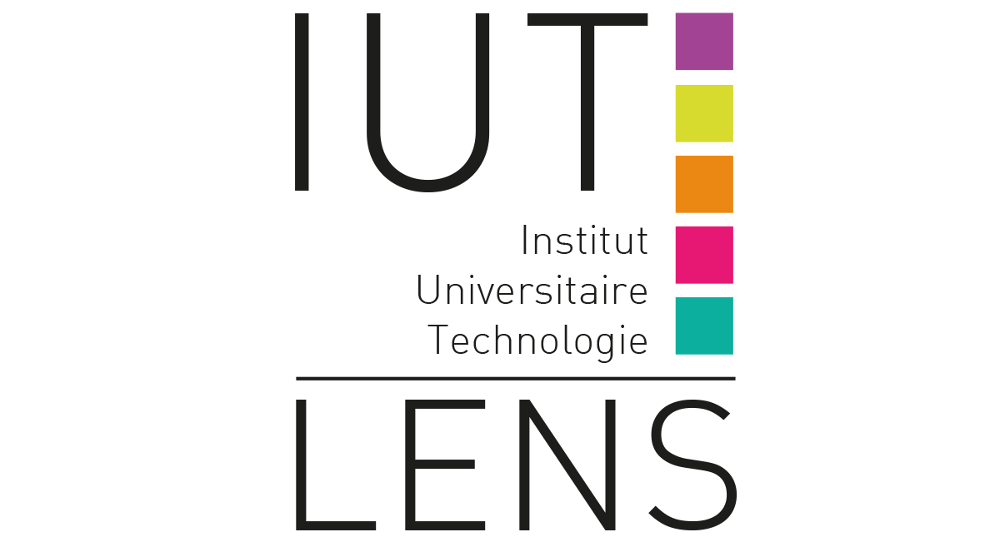
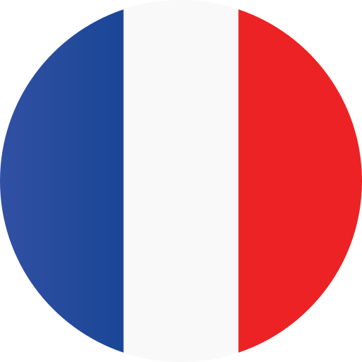
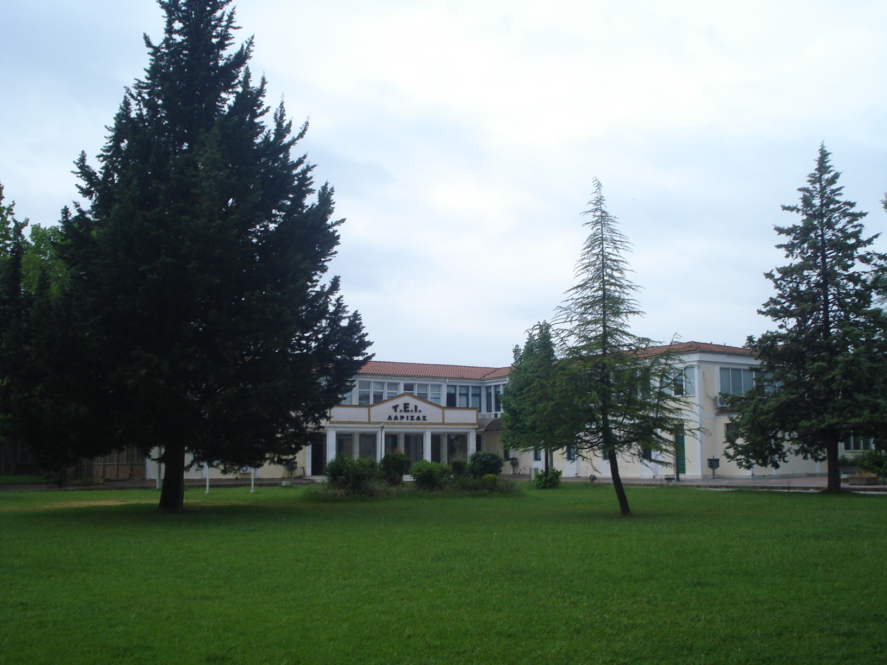
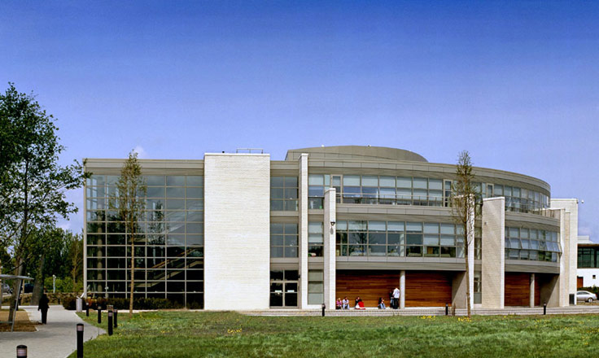
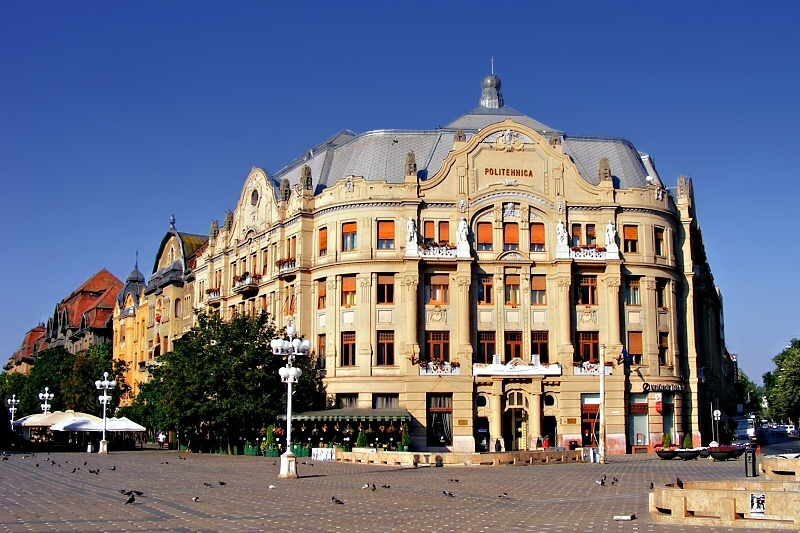
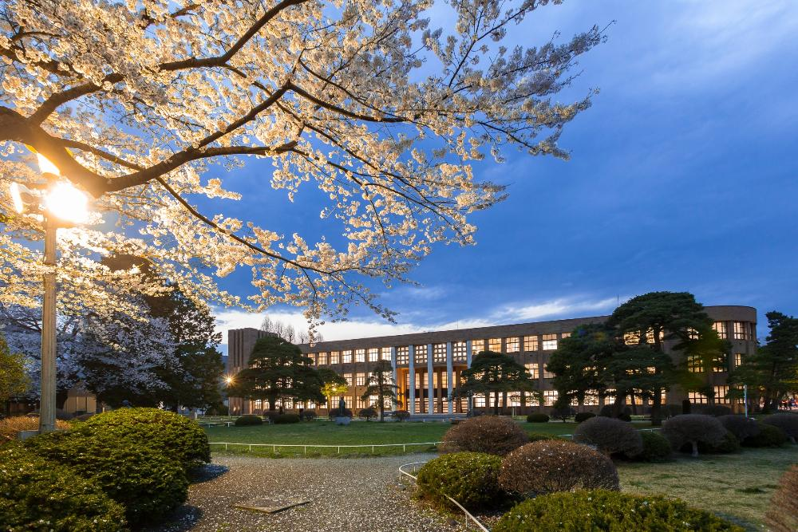

<!DOCTYPE html>
<html lang="fr">
 <head>
  <meta charset="utf-8">
  
  <title> UIT of Lens/title>
  
          <!-- Feuilles de style en cascade -->
  <link rel="stylesheet" href="MaterialDesign/material.min.css">
  
  <link rel="stylesheet" href="Bootstrap/css/bootstrap.min.css">
  <link rel="stylesheet" href="css/style.css">

  
 </head>
 <body> 
  
	
  
  
  
              <!-- La navbar de l'extrême -->
  <nav class="navbar fill navbar-expand-xs fixed-top mx-auto" style="background-color: #fff;">
	  
   <a id="logo" class="nav-brand" href="http://www.iut-lens.univ-artois.fr/"> </a>
   <a id="langue" class="nav-brand" href="index.html"></a> 
   
   <ul id="menu" class="nav nav-pills nav-justified mx-auto">
     <li id="iut" class="nav-item">
       <a class="nav-link" href="#jumbotron_iut">UIT</a>
     </li>
     <li id="dut_info" class="nav-item">
       <a class="nav-link" href="#jumbotron_dutinfo">IT Department</a>
     </li>
     <li id="international" class="nav-item">
       <a class="nav-link" href="#jumbotron_inter">International</a>
     </li>
   </ul>
  </nav>
  <a href="#"></a>
  
              <!-- Premier article -->
              
  <div id="jumbotron_iut" class="jumbotron jumbotron-fluid">
   <hr / id="marqueur_iut" style="background-color: #2119FF;">
   
   
    
   <hr / id="marqueur_iut" style="background-color: #2119FF;">
   
   <div id="pavé" class="container">
	<section class="row">
	 <div id="iutpart1" class="col-md-6">
      <h1 id="titre_iut"> UIT of Lens... <br></h1>
      <p> ...proposes <b>4 DUT</b>, <b>8 professional licences</b> and <b>8 University Certificate</b>.</p>
      <p>Each certificate can be followed by: </p>
      <ul class="list-group content-justify-center">
       <li class="list-group">- Initial training (student status)</li>
       <li class="list-group">- Work-linked training : contract of apprenticeship or professionalisation contract (employee status)</li>
       <li class="list-group">- Finally, continuing education for employee or job seeker.</li>
       <p></p>
       <p>The UIT of Lens provide optimum working condition thanks to hight performance machines,
       an innovative pedagogy, a personalised follow-up, and a proximity with the teaching staff for afin d'assurer
       the fulfilment of each student in our UIT. </p>
      </ul>
     </div>
     <div id="iutpart2" class="col-md-6">
	  <div id="contact_plan" class="container">
       <p id ="pavé_iut" align="center" style="font-size: 16px;">
		   If you want to contact us or come study in our UIT, there links are very useful.  </p>
	   
        <a id="button_iut" href="image/contact.png" class="mdl-button mdl-js-button mdl-button--raised mdl-button--colored">
         Contact
        </a>
        
       <a id="button_iut" href="image/plan.png" class="mdl-button mdl-js-button mdl-button--raised mdl-button--colored">
         Getting here
       </a>
      </div>
     </div>
    </section>
    </div>
  <hr / id="marqueur_iut" style="background-color: #2119FF;" >
  </div>
  
				<!-- Deuxieme article ! -->
  
  <div id="jumbotron_dutinfo" class="jumbotron jumbotron-fluid">
   <hr / id="marqueur_dutinfo" style="background-color: #3DFF8A;">
   
   
   
   <hr / id="marqueur_dutinfo" style="background-color: #3DFF8A;">
   
   <div id="pavé" class="container">
    <section class="row">
     <div id="dutinfo_g" class="col-md-4">
      <h1 id="titre_dutinfo" > Acces to the DUT </h1>
	  <p style="font-size: 16px; text-decoration: underline;">Prérequis:</p>
	  <p>
	        - If you have a baccalaureate S(Science stream), baccalaureate ES (economics and social science stream), baccalaureate STI2D, baccalaureate STMG or an equivalent,
	   <br/>- <b>Voluntary</b>, <b>motivated</b> and <b>interested by new technology,</b>
	   <br/>- Basic knowledge are <u>recommended.</u> No previous level is necessary in computer science.
	   <br/>- The admission is done on the study of the mark of the classes of Year 12 and Year 13 and <u>possibly</u> an interview.
	  </p>
	  
	  <p> You can find the national educational program <b>(NEP)</b> of the IT department. </p>
	  <a id="button_dutinfo" href="image/PPN.pdf" class="mdl-button mdl-js-button mdl-button--raised mdl-button--colored">
         NEP
       </a>

     </div>
     
     
     <div id="dutinfo_mid" class="col-md-4">
      <h1 id="titre_dutinfo" align="center"> The IT Department... </h1>
      <p>gives<b> the acces to a lot of jobs in different domains</b>, like 
      analysis, conception and computing dévelopement,
      conception and website management,
      assistance and the setting up of users,
      commercialization of computing solution.<br/><br/>
      There is also the possibility <b>to go to Canada during one term or an intership (Canada, Japan, Greece, Romania, Poland, etc.) abroad.</b>
    
    <br/><br/>For taking on responsibilities, computer scientist must
      be technically competent,
      know the economic environment in which they will have to practice their job,
      have a good general knowledge and be able to communicate easily.

    </p>
    
     </div>
     
     
     <div id="dutinfo_d" class="col-md-4">
      <h1 id="titre_dutinfo"> After the DUT </h1>
      <p style="font-size: 16px; text-decoration: underline;">Further study are possible:</p>
      <p>
          - <b>Bac+3</b> :  Vocational degree. In the UIT there are vocational degree in computing and dispense plusieurs
                            licences professionnelles en informatique et Métiers du Multimédia et de l’Internet.
     <br/>- <b>Bac+5</b> : 	Engineering school in IT, or a licence and a master in computer science
     <br/>- <b>Bac+8</b> :  IT doctorate.
     <br/>- Possibily to pass numerous competitions.
     <br/><br/>
      Of the DUT prepare to go straight into the professional world, <b>92 % of graduates of the IT department
      continue their study</b> according the 2014 insertion survey of the Ministry of National Education
      and higher education.
      After the DUT, graduates can go on a IT licence (including MIAGE),
      in professional licence in cumputer science. They also enter in a specialize school
     (Supinfo Paris, ESIG, ESGI, etc.) or enter in a engineering school (EISTI, EFREI Paris, ENSEEIHT Toulouse, etc....). 
     </p>
     
     
     </div>
    </section>
   </div>
   <hr / id="marqueur_iut" style="background-color: #3DFF8A;" >
  </div>
  
  
			<!-- Troisième article ! --> 
			 
  
  <div id="jumbotron_inter" class="jumbotron jumbotron-fluid">
	  
   <hr / id="marqueur_inter" style="background-color: #F58F0A;">
   
   
   
   <hr / id="marqueur_inter" style="background-color: #F58F0A;">
   
   <div id="pavé" class="container">
    <section class="row">
     <div class="col-md-12">
      <h1 id="titre_inter">Go overseas</h1>
      <p id="pavé">Student who wants to go have the posibilty to do semester overseas during
                   their second year in IT department. 
                   To this end, students have to candidate during the year which precede year of their departure.<br/>
		           Here is available destinations:</p>
      
     </div> 
     <div class="col-md-6">
	  <div id="semestre-uqac" class="container">
	   <a href="http://www.uqac.ca/etudiants_internationaux/"></a>
	   <p id="sous-image"> --- Cliquer sur l'image pour plus d'informations --- </p>
	   
	   <p id="pavé"><b>Chicoutimi's university of Quebec</b>, UQAC, welcomes students for one semester 
		 (during the fourth one). 
		 Only 3 places are vacant, but depending on years, more places might be available.<br/><br/> </p>
	 
	  </div>
	 </div>
	  
     <div class="col-md-6">
	  <div class="container">
	   <a href="https://uqam.ca/"></a>
	   <p id="sous-image"> --- Click for more information --- </p>
	   
	   <p id="pavé">Each year, <b>University of Quebec at Montreal (UQAM)</b> welcomes almost 3 500 foreign students from 96 different country.
	   UQAM is directly accessible Berri-UQAM and Place-des-Arts subways.
	   Dynamic, Montreal moves winter and summer, day and night, warming of cultural activities.</p>
	  
	 
	  </div>
     </div>
       
      <div id="pays_pic" class="col-md-3">
        <p id="titre_inter">Greece</p>
        <a href="http://www.teilar.gr/index_en.php"></a>
        <p id="sous-image"> --- Click for more information --- </p>
     
      </div> 
      
      <div id="pays_pic" class="col-md-3">
       <p id="titre_inter">Ireland</p>
	   <a href="https://www.dkit.ie/"></a>
       <p id="sous-image"> --- Click for more information --- </p>
     
      </div> 
      
      <div id="pays_pic" class="col-md-3">
        <p id="titre_inter">Poland</p>
        <a href="https://www.pw.edu.pl/engpw"></a>
        <p id="sous-image"> --- Click for more information --- </p>
       
      </div> 
      
      <div id="pays_pic" class="col-md-3">
        <p id="titre_inter">Romania</p>
        <a href="https://www.uvt.ro/fr/"></a>
        <p id="sous-image"> -- Click for more information -- </p>
       
        <br/><br/><br/>
      </div> 
     
   
    
    
    
     <div class="col-md-12">
	  <p id="titre_inter">Japan</p>	
      <div  class="container">
	   <a href="http://www.kosen-k.go.jp/english/"></a>
	    <p id="sous-image"> -- Click for more information -- </p>
       <p id="pavé"><br/><b>Japanese's kosen is equivalent to a french IUT.</b>
      Students are welcome for a labory stage.
      A total of 6 students can go to Tohoku. No need to have a well japanese, bases
      is enough, but a B1 level in english is needed.</p> 
      </div>
     </div>
           
                   
     </div> 
     
      <div id="theme" class="col-md-12">
       <h1 id="titre_theme"><br/><br/>Testimony</h1>
       <p id="pavé">For always more infomations, we've decide to ask some
       questions to comrade !
       <b>Julien Dupuis</b>, in his <b>second year in the IT department</b>, accepted
       to talk about his départ to Japan ! <br/><br/></p>
       
       <p id="question">How did you fund your travel ?</p>
       <blockquote class="blockquote">
	    - To fund it I asked the help of my parents as well as the differentes scholarship 
	      (CROUS, Support for international mobility, Ledoux).
	      I don't have to take car plane tickets or any other type of transport because 
          RI responsibles order all the tickets once and for all. But I just have 
          to take care of my passeport and lear the bases in japanese even if 
          I'm suppose to speak english.
       </blockquote>
       <p id="question">What's your motivations ?</p>
       <blockquote class="blockquote">
       - Desire to travel, discover a distant horizon and new culture.
       </blockquote>
       <p id="question">Why you chose Japan ?</p>
       <blockquote class="blockquote">
	    - I chose Japon firsty because I'm a huge fan of mangas 
	    animes but also for the culture in term of cooking or 
	    for the history of the country. It's also a country with a high level in technology 
	    and I think that is gonna be a very good computering experience.
	   </blockquote>
	   <p id="question">Do you have bases in Japanese ?</p>
	   <blockquote class="blockquote">
		I have small bases but I really have to improve my language !
	   </blockquote>
	   <p id="question">Do you seek to adopt the japanese culture ?</p>
	   <blockquote class="blockquote">
	   - I will adapt mysel to the culture during this 3 next months but I don't
	   really seek to adopt it in my daily life.
	   </blockquote>
	   <p id="question">A personnal word to finish ? </p>
	   <blockquote class="blockquote">
	    - I'm realy eager to leave and I hope it won't disappoint me !
	   </blockquote>
      </div> 
     
    </section>
   
   <hr / id="marqueur_inter" style="background-color: #F58F0A;">
  </div>
  
  <footer>
   <section class="row">
     <div class="col-md-10">
      <ul id="footer_ul" class="list-group">
       <li id="footer_li" class="list-group"><b>Webmasters</b></li>
        <p id="pavé" style="color: #616161;">
			 - SEDDAR Naïm
        <br/>- DUHEM Alexandre
        <br/>- CAPILLIEZ Maxance</p>
       <a id="footer-link" href="http://www.iut-lens.univ-artois.fr/"><li id="footer_li" class="list-group">UIT's website</li></a>
       <a id="footer-link" href="http://www.univ-artois.fr/"><li id="footer_li" class="list-group">Artois University's website</li></a>
      </ul>
     </div>
     
     <div id="logo_footer" class="col-md-2">
      <div class="container">
       <a href="http://www.univ-artois.fr/"></a>
	  </div>
     </div>
   </section>
  </footer>
  
  
  
  <script src="Bootstrap/js/bootstrap.min.js"></script>
  <script src="MaterialDesign/material.min.js"></script>
 </body>
</html>
